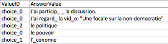

18.2. Answer Data#
To review learner answers to the problems in your course, you can review the answer submitted by a selected learner for a specific problem or download a course-wide report of any learner answers to a specific problem. You can also download an answer distribution report for course problems.
Learner answer distribution data, including both charts and reports, is also available from edX Insights. For more information, see Using edX Insights.
18.2.1. Learner Answer Submissions#
You can review a single learner’s complete submission history for a specific problem, or the answers submitted by all learners for that problem. For either a single learner or all learners, you can review the exact response submitted, the number of attempts made, and the date and time of the submission.
18.2.1.1. View One Learner’s Submission History#
Before you can check the answer or answers submitted by a learner, you need the learner’s username. For more information about how to obtain usernames, see Download or View Learner Data.
To review a response submitted by a learner, follow these steps.
View the live version of your course.
Select Course and navigate to the unit that contains the problem you want to review.
Display the problem, and then select Submission History below the problem.
Enter the username for the learner whose work you want to review, and then select View History at the end of the page.
Information about the response or responses provided by the learner displays. For more information, see Interpret a Learner’s Submission History.
To close the Submission History Viewer, click on the browser page outside of the viewer.
18.2.1.2. Interpret a Learner’s Submission History#
The Submission History Viewer shows every timestamped database record of the interactions between a learner and a problem, which can include processes completed both in the browser and on the server. These records appear with the most recent interaction at the top of the Submission History Viewer, followed by each previous interaction.
This topic provides an example submission history for a CAPA problem with guidelines that can help you interpret a submission history. The number and complexity of the records that appear in this report vary based on the type of problem and the settings and features defined.
Record 1: Problem Viewed (Server)
The first interaction, shown at the bottom of the Submission History, records when the server delivered the problem component to the browser for the learner to view.
#1: 2015-09-04 08:34:53+00:00 (America/New_York time)
Score: None / None
{
"input_state": {
"e58b639b86db44ca89652b30ea566830_2_1": {}
},
"seed": 1
}
Record 2: Problem Checked (Browser)
The next interaction shown as you scroll up from the bottom records when the
learner selected Submit in the browser to submit an answer. Note that this
record does not contain the actual answer submitted. The answer choice is
indicated using a choice identifier: choice_1 in this example.
Note
The numbering of choice identifiers starts at choice_0, so that
choice_0 represents your first answer choice, choice_1 represents
your second answer choice, and so on.
#2: 2015-09-04 08:35:03+00:00 (America/New_York time)
Score: 0.0 / 1.0
{
"input_state": {
"e58b639b86db44ca89652b30ea566830_2_1": {}
},
"seed": 1,
"student_answers": {
"e58b639b86db44ca89652b30ea566830_2_1": "choice_1"
}
Record 3: Problem Checked (Server)
The next interaction records the results of the server processing that occurred
after the learner submitted the answer. This record includes
student_answers with the submitted answer value, along with attempts,
correctness, and other values.
#3: 2015-09-03 18:15:10+00:00 (America/New_York time)
Score: 0.0 / 1.0
{
"attempts": 1,
"correct_map": {
"e58b639b86db44ca89652b30ea566830_2_1": {
"answervariable": null,
"correctness": "incorrect",
"hint": "",
"hintmode": null,
"msg": "",
"npoints": null,
"queuestate": null
}
},
"done": true,
"input_state": {
"e58b639b86db44ca89652b30ea566830_2_1": {}
},
"last_submission_time": "2015-09-03T18:15:10Z",
"seed": 1,
"student_answers": {
"e58b639b86db44ca89652b30ea566830_2_1": "choice_1"
}
}
Record 4: Problem Retried (Browser)
When a problem gives learners multiple attempts at the correct answer, and the learner tries again, an additional record is added when a learner selects Submit again. The server has not yet processed the new submission, so the data in the record is almost identical to the data in record 3.
Record 5: Problem Retried (Server)
The most recent interaction in this example records the results after the
learner attempts the problem again and submits a different answer. Note the
differences between values in this record and in record 3, including the
reported Score and the values for student_answers, attempts, and
correctness.
#5: 2015-09-03 18:15:17+00:00 (America/New_York time)
Score: 1.0 / 1.0
{
"attempts": 2,
"correct_map": {
"e58b639b86db44ca89652b30ea566830_2_1": {
"answervariable": null,
"correctness": "correct",
"hint": "",
"hintmode": null,
"msg": "",
"npoints": null,
"queuestate": null
}
},
"done": true,
"input_state": {
"e58b639b86db44ca89652b30ea566830_2_1": {}
},
"last_submission_time": "2015-09-03T18:15:17Z",
"seed": 1,
"student_answers": {
"e58b639b86db44ca89652b30ea566830_2_1": "choice_2"
}
}
18.2.1.3. Report All Learners’ Answer Submissions#
The Student State report lists the answers that every learner has submitted for one or more problems. You can download this report for just one problem, or for all of the problems in a course, section, subsection, or unit at one time.
Note
The report is limited to 5000 responses. If you expect more than 5000 responses, try generating the report on a section, subsection, or unit basis. Contact your site administrator if you want to increase your response limit.
To download the Student State report for one or more problems, follow these steps.
View the live version of your course.
On the Instructor tab, select Data Download.
In the Reports section, locate and select Select a section or problem.
Use the arrow icons in the dropdown list to select the section, subsection, unit, or problem that you want. You can also select the entire course.
If you select a course, section, subsection, or unit, the Student State report includes all of the problems in that part of the course.
Select Download a CSV of problem responses.
At the bottom of the page, select the
{course_id}_student_state_from_{problem_location}_{date}.csvfile.Use a text editor or spreadsheet application to open the file. For more information, see Interpret the Student State Report.
18.2.1.4. Interpret the Student State Report#
The Student State report contains a row for each learner who has viewed a problem or submitted an answer for a problem, identified by username.
The .csv file contains the following columns.
Column |
Description |
|---|---|
Username |
The student’s username. |
Title |
The display name or title of the problem or course component. |
Question |
The question(s) that were asked to the student. |
Answer |
The student’s answer(s), in human-readable text. |
Location |
The location of the problem or component in the course. For example, Introduction > Overview > Testing Your Knowledge (section, subsection, and unit). |
State |
The detailed JSON data with details in the student’s submission (not human-readable). |
Block_key |
The ID or key of the XBlock. Note that non-interactive XBlocks, such as HTML/text blocks, will not appear in the report. |
The State column reports the results of the server processing for each learner’s most recently submitted answer. When you open the report, the value in the State column appears on a single line. This value is a record in JSON format. An example record for a text input CAPA problem follows.
{"correct_map": {"e58b639b86db44ca89652b30ea566830_2_1": {"hint": "", "hintmode": null, "correctness": "correct", "msg": "", "answervariable":
null, "npoints": null, "queuestate": null}}, "input_state":
{"e58b639b86db44ca89652b30ea566830_2_1": {}}, "last_submission_time":
2015-10-26T17:32:20Z", "attempts": 3, "seed": 1, "done": true,
student_answers": {"e58b639b86db44ca89652b30ea566830_2_1": "choice_2"}}
You can use a JSON “pretty print” tool or script to make the value in the State column more readable, as in the following example.
{
"correct_map": {
"e58b639b86db44ca89652b30ea566830_2_1": {
"hint": "",
"hintmode": null,
"correctness": "correct",
"msg": "",
"answervariable": null,
"npoints": null,
"queuestate": null
}
},
"input_state": {
"e58b639b86db44ca89652b30ea566830_2_1": {
}
},
"last_submission_time": "2015-10-26T17:32:20Z",
"attempts": 3,
"seed": 1,
"done": true,
"student_answers": {
"e58b639b86db44ca89652b30ea566830_2_1": "choice_2"
}
}
When you add line breaks and spacing to the value in the State column for this CAPA problem, it becomes possible to recognize its similarity to the server problem check records in the Submission History. For more information, see Interpret a Learner’s Submission History.
A State value that appears as follows indicates a learner who has viewed a CAPA problem, but not yet submitted an answer.
{"seed": 1, "input_state": {"e58b639b86db44ca89652b30ea566830_2_1": {}}}
For open response assessment problems, the State value appears as follows for learners who have submitted an answer.
{"submission_uuid": "c359b484-5644-11e5-a166-0a4a2062d211", "no_peers": false}
For open response assessment problems, "no_peers": false indicates that the
learner has completed at least one peer assessment, while "no_peers": true
indicates that no peer assessments have been submitted.
18.2.2. Student Answer Distribution#
For certain types of problems in your course, you can download a .csv file with data about the distribution of learner answers. Student answer distribution data is included in the file for problems of these types.
Checkboxes (
<choiceresponse>)Dropdown (
<optionresponse>)Multiple choice (
<multiplechoiceresponse>)Numerical input (
<numericalresponse>)Text input (
<stringresponse>)Math expression input (
<formularesponse>)
The file includes a row for each problem-answer combination selected by your learners. For example, for a problem that has a total of five possible answers the file includes up to five rows, one for each answer selected by at least one learner. For problems with Randomization enabled in Studio (sometimes called rerandomization), there is one row for each problem-variant-answer combination selected by your learners. For more information, see Defining Settings for Problem Components.
Note
Certain types of problems can be set up to award partial credit. When a learner receives either the full or a partial score for a problem, this report includes that answer as correct.
The .csv file contains the following columns.
Column |
Description |
|---|---|
ModuleID |
The internal identifier for the problem component. |
PartID |
For a problem component that contains multiple problems, the internal identifier for each individual problem. For a problem component that contains a single problem, the internal identifier of that problem. |
Correct Answer |
0 if this AnswerValue is incorrect, or 1 if this AnswerValue is correct. For a problem that is set up to award partial credit, 1 if the AnswerValue awards either the full or a partial score. |
Count |
The number of times that learners entered or selected this answer as their most recent submission for the problem or problem variant. For problems with the number of Attempts set to a value greater than 1, this means that each learner contributes a maximum of 1 to this count, even if the same answer is provided in multiple attempts. |
ValueID |
The internal identifier of the answer choice for checkboxes and multiple choice problems. Blank for dropdown, numerical input, text input, and math expression input problems. Note that the numbering of choice identifiers starts at |
AnswerValue |
The text label of the answer choice for checkboxes, dropdown, and multiple choice problems. The value entered by the learner for numerical input, text input, and math expression input problems. |
Variant |
For problems that use the Randomization setting in Studio, contains the unique identifier for a variant of the problem. Blank for problems that do not use the Randomization setting, or that use the Never option for this setting. |
Problem Display Name |
The Display Name defined for the problem. |
Question |
The text in the problem that is identified with accessible label
formatting. In Studio’s The Simple Editor, this text appears with two
angle brackets on either side pointing inward. For example, |
Entries are sorted by the value in each column, starting with the ModuleID on the left and continuing through the columns to the right.
18.2.2.1. Download the Student Answer Distribution Report#
An automated process runs periodically on the edX servers to update the .csv file of learner answer data. A link to the most recently updated version of the .csv file is available on the Instructor Dashboard.
To download the most recent file of learner answer data, follow these steps.
View the live version of your course.
Select Instructor, and then select Data Download.
At the bottom of the page, select the
{course_id}_answer_distribution.csvfile. You may have to scroll down to find this file.
18.2.2.2. Frequently Asked Questions about the Student Answer Distribution Report#
Answers to questions about the student answer distribution report follow.
My course doesn’t have a student answer distribution report. How can I generate it?
Student answer distribution reports are generated automatically, and refreshed
several times each day. The {course_id}_answer_distribution.csv file
displays after all of the {course_id}_grade_report_{date}.csv files. Be
sure to scroll to the end of the list of available reports.
Why are some problems missing from this report? The ones that are missing do have the problem types listed under Answer Data.
This report includes only problems that at least one learner has answered since early March 2014. For those problems, this report only includes activity that occurred after October 2013.
Why don’t I see an AnswerValue for some of my problems?
For checkboxes and multiple choice problems, the answer choices actually selected by a learner after early March 2014 display as described in the previous answer. Answer choices selected by at least one learner after October 2013, but not selected since early March 2014, are included on the report but do not include an AnswerValue. The ValueID does display the internal identifiers, such as choice_1 and choice_2, for those answers.
Why don’t I see a Question for some of my problems?
The value in the Question column is the question text that you identified for the problem with the accessible label formatting. If you did not identify question text for the problem, you will not see a question. For more information about how to set up accessible labels for problems, see The Simple Editor.
Also, for problems that use the Randomization setting in Studio, if a particular answer has not been selected since early March 2014, the Question is blank for that answer.
My learners are saying that they answered a question, but it isn’t showing up in the report. How can that be?
Only questions that have a Maximum Attempts setting of 1 or higher are included on the report.
I made a correction to a problem after it was released. How can I tell which learners tried to answer it before I made the change?
Problem Count values reflect the entire problem history. If you change a problem after it is released, it may not be possible for you to determine which answers were given before and after you made the change.
Why is the same answer showing up in two different rows when I view the report in a spreadsheet?
Some spreadsheet applications can alter the data in the .csv report for display purposes. For example, for different learner answers of “0.5” and “.5” Excel correctly includes the two different lines from the .csv, but displays the AnswerValue on both of them as “0.5”. If you notice answers that appear to be the same on separate lines with separate counts, you can review the actual, unaltered data by opening the .csv file in a text editor.
Why are there strange characters in the report when I view it in a spreadsheet?
The .csv file is UTF-8 encoded, but not all spreadsheet applications interpret and render UTF-8 encoded characters correctly. For example, a student answer distribution report with answer values in French displays differently in Microsoft Excel for Mac than in OpenOffice Calc.
Answer Values in Microsoft Excel for Mac:
Answer Values in OpenOffice Calc:

If you notice characters that do not display as expected in a spreadsheet, try a different spreadsheet application such as LibreOffice or Apache OpenOffice to open the .csv file.
18.2.2.3. Interpret the Student Answer Distribution Report#
You can use the Student Answer Distribution report to review learner responses to assignments, which can then help you evaluate the structure and completeness of your course content and problem components.
As an example, you define a text input question in Studio to have a single correct answer, “Warfarin”. When you produce the Student Answer Distribution report, you verify that this answer was in fact marked correct: there is a 1 in the Correct Answer column for this AnswerValue.

However, as you view the report you notice other learner answers that you did not set up to be marked as correct in Studio, but that you might (or might not) also consider to be correct, such as “Warfarin or Coumadin”. The Correct Answer column shows that the other answers were marked incorrect (0), but for future iterations of your course you may want to revise the question or update the problem to evaluate additional variations of the answer as correct.
Many spreadsheet applications offer data visualization options, such as charts or graphs. Charts can help make your learners’ common misconceptions easier to identify.

In this example, the Student Answer Distribution report is open in Microsoft Excel. To create a chart that shows how many of your learners chose various answers to a multiple choice question, you move the AnswerValue and Count columns next to each other. After you click and drag to select the report cells that contain the data you want to chart, you select the Charts toolbar and then select the type of chart you want.
Note
Refer to the help for the spreadsheet application that you use for information on using these options. You may have to make changes to your spreadsheet, such as reordering columns. Save a copy of the file you originally downloaded as a backup before you begin.
You can adjust your course content based on common mistakes. While most learners in this example selected the correct answer, the number of incorrect answer(s) can guide future changes to the course content.